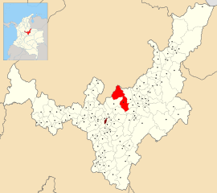

Espacio
Paipa es uno de los 123 municipios del Departamento de Boyacá, ubicado en el
centro-oriente de Colombia. Es el sexto municipio más poblado del Departamento por
detrás de Tunja, Duitama, Sogamoso, Chiquinquirá y Puerto Boyacá, además de esto es
considerado la capital turística de Boyacá dada su riqueza en historia y en lugares
turísticos. Es considerado el municipio con mejor infaestructura hotelera del departamento,
por lo que se utiliza como lugar de encuentro para diferentes congresos y conversatorios a
nivel nacional.
Debido a su gran potencial en el sector del turismo, Paipa es reconocido por la gran variedad
de lugares históricos y turísticos por todo el territorio. Dentro de los que se encuentran:
El Lago de Sochagota

El lago Sochagota es un lago artificial creado para potenciar el potencial turístico
de Paipa, ubicado en la zona hotelera de Paipa. Fundado en 1956 como el lago artifical
de Paipa, cuyo nombre Sochagota proviene del juego de palabras "such-a-gota" para referirse
a la considerable extensión del lago. La idea de construcción proviene de Emiro Fonseca Franky, en
1955 cuando era gobernador Olivo Torres y con la ayudad de Gustavo Rojas Pinilla. Posee un área
163 Hectáreas, un volumen de 4557000 metros cúbicos, una profundidad promedio de 2,80 metros
Pantano de Vargas
El Pantano de Vargas, más llamado monumento a los 14 lanceros es el monumetno más grande de Colombia. Es el
ligar en el que se llevó a cabo la penúltima independencia de Colombia el 25 de julio de 1819. El monumento
representa a Juan Jose Rondón y a sus 14 lanceros dado a que fueron de gran importancia para cambiar el
rumbo de la batalla a favor del ejercito patriota en búsqueda de la independencia de Colombia. La obra fue
realizada en 1969 por el maestro Rodrigo Arenas Betancourt al cumplirse 150 años de la independencia.
Laguna seca
Laguna que se encuentra en la vereda Marcura en Paipa, lleno de zonas verdes y de un ambiente
de tranquilidad. Se realizan diferentes actividades como caminatas ecológicas, ciclomontañismo, entre otras.
Además de ser un atractivo turístico, funciona como fuente hídrica de los municipios de Paipa y
de Sotaquirá. Es un lugar importante para el servicio de agua en ambos municipios, funciona como
reserva natural para ciertas especies como el frailejón, que es una planta importante paramantener el balance
hídrico dentro de la laguna.
Ubicación
Paipa se encuentra en el norte del departamento de Boyacá y en el nororiente de Colombia. Su extensión es de
306 kilómetros cuadrados (debido a su gran dispersión entre las 34 veredas que posee), su altura a nivel del mar en promedio
es de 2500 m.s.n.m.

Algunos detalles
| Área |
306 Kilómetros cuadrados |
| Altura |
2500 m.s.n.m |
| Población |
34000 habitantes |
| Densidad promedio |
104 h/km2 |